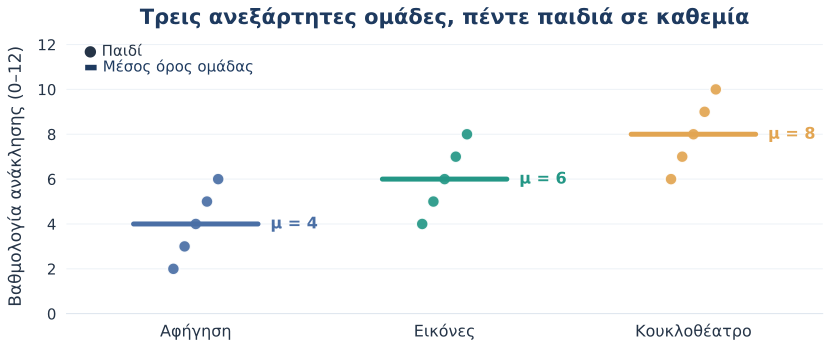
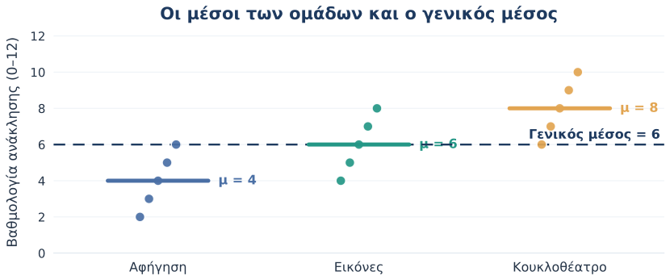
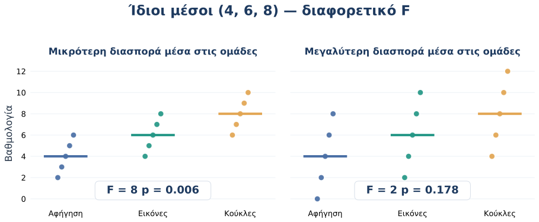
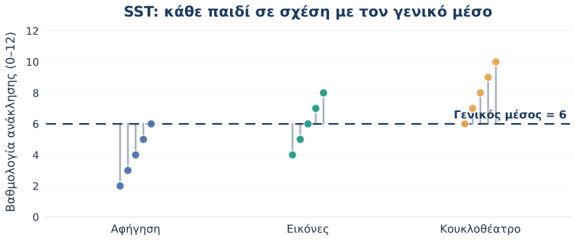
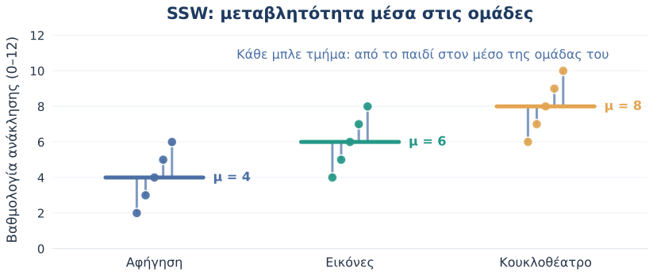
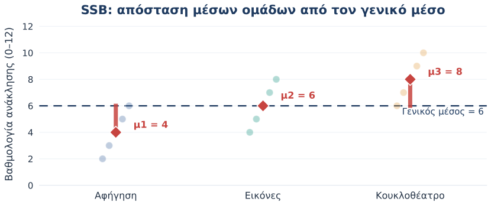
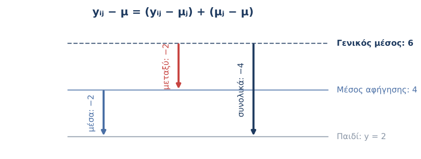
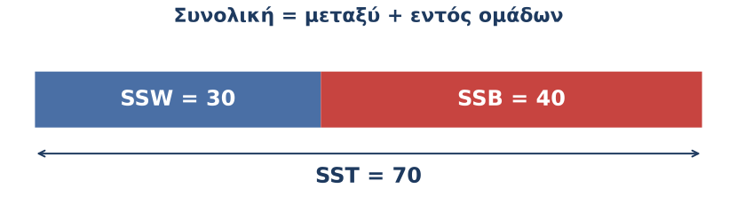
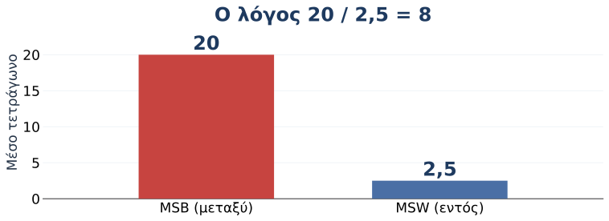
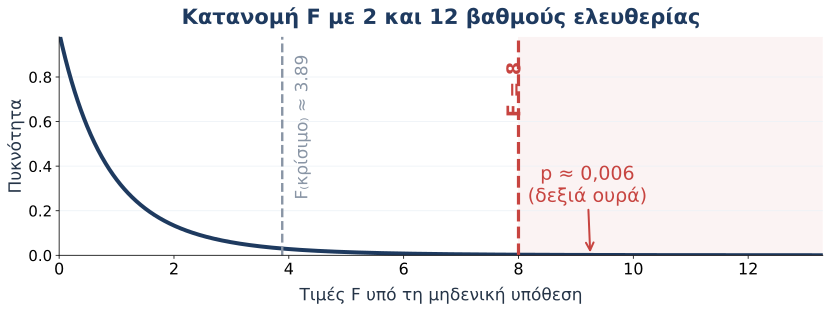

One-way ANOVA · Κατανοούμε τη λογική πίσω από το F
2026-10-29
Κεντρική ερώτηση: Είναι οι μέσοι όροι διαφορετικοί σε σχέση με τις διαφορές που υπάρχουν έτσι κι αλλιώς ανάμεσα στα παιδιά;
Έπειτα από μια δραστηριότητα, ζητάμε από κάθε παιδί να ανακαλέσει λέξεις από μια ιστορία.
Τρεις τρόποι παρουσίασης της ιστορίας
Έκβαση: αριθμός λέξεων που ανακλήθηκαν (0–12).
Ερευνητικό ερώτημα
Διαφέρει ο μέσος αριθμός λέξεων που θυμούνται τα παιδιά ανάλογα με τον τρόπο παρουσίασης;
Ένας παράγοντας: τρόπος παρουσίασης (Α, Β, Γ).
Μία εξαρτημένη μεταβλητή: επίδοση ανάκλησης.
| Παιδί | Α: Αφήγηση | Β: Εικόνες | Γ: Κουκλοθέατρο |
|---|---|---|---|
| 1 | 2 | 4 | 6 |
| 2 | 3 | 5 | 7 |
| 3 | 4 | 6 | 8 |
| 4 | 5 | 7 | 9 |
| 5 | 6 | 8 | 10 |
| Μέσος | 4 | 6 | 8 |

Σκεφτείτε: Είναι η διαφορά ανάμεσα στις ομάδες μεγάλη συγκριτικά με την ποικιλία επιδόσεων μέσα σε κάθε ομάδα;

\[ \bar y_A=4,\qquad \bar y_B=6,\qquad \bar y_\Gamma=8,\qquad \bar y=6 \]
Μηδενική υπόθεση (\(H_0\))
\[\mu_A=\mu_B=\mu_\Gamma\]
Στον πληθυσμό, οι τρεις μέσοι είναι ίσοι.
Εναλλακτική υπόθεση (\(H_1\))
Δεν είναι όλοι οι μέσοι ίσοι.
Τουλάχιστον ένας πληθυσμιακός μέσος διαφέρει από κάποιον άλλο.

Ίδιοι μέσοι (4, 6, 8) — αλλά η δεύτερη εικόνα έχει πολύ μεγαλύτερη μεταβλητότητα μέσα στις ομάδες.
\(y_{ij}\)
Η επίδοση του παιδιού \(i\) στην ομάδα \(j\).
\(\bar y_j\)
Ο μέσος της ομάδας \(j\).
\(\bar y\)
Ο γενικός μέσος όλων των παιδιών.
Η ANOVA χωρίζει τη συνολική μεταβλητότητα σε μεταβλητότητα μεταξύ ομάδων και μέσα στις ομάδες.

\[ SS_T=\sum_{j=1}^{k}\sum_{i=1}^{n_j}(y_{ij}-\bar y)^2 \]

\[ SS_W=\sum_{j=1}^{k}\sum_{i=1}^{n_j}(y_{ij}-\bar y_j)^2 \]

\[ SS_B=\sum_{j=1}^{k}n_j(\bar y_j-\bar y)^2 \]

\[ \underbrace{(y_{ij}-\bar y)}_{\text{συνολικά}} =\underbrace{(y_{ij}-\bar y_j)}_{\text{μέσα στην ομάδα}} +\underbrace{(\bar y_j-\bar y)}_{\text{μεταξύ ομάδων}} \]
\[ \boxed{SS_T=SS_B+SS_W} \]
SSB — Μεταξύ ομάδων
Διαφορές των μέσων των ομάδων από τον γενικό μέσο.
SSW — Μέσα στις ομάδες
Διαφορές των ατομικών επιδόσεων από τον μέσο κάθε ομάδας.
| Ποσότητα | Ομάδα Α | Ομάδα Β | Ομάδα Γ | Σύνολο |
|---|---|---|---|---|
| \(n_j\) | 5 | 5 | 5 | 15 |
| \(\bar y_j\) | 4 | 6 | 8 | 6 (γενικός μ.) |
| \(\sum_i(y_{ij}-\bar y_j)^2\) | 10 | 10 | 10 | SSW = 30 |
| \(n_j(\bar y_j-\bar y)^2\) | 20 | 0 | 20 | SSB = 40 |
\[ SS_T=SS_B+SS_W=40+30=\boxed{70} \]

Η συνολική μεταβλητότητα 70 μονάδων² αποτελείται από 40 μονάδες² μεταξύ ομάδων και 30 μονάδες² μέσα στις ομάδες.
Τα SS εξαρτώνται από το πόσες ομάδες και πόσα παιδιά έχουμε. Χρειάζεται προσαρμογή για τους βαθμούς ελευθερίας.
| Πηγή μεταβλητότητας | Βαθμοί ελευθερίας | Παράδειγμα |
|---|---|---|
| Μεταξύ ομάδων | \(df_B=k-1\) | \(3-1=2\) |
| Μέσα στις ομάδες | \(df_W=N-k\) | \(15-3=12\) |
| Συνολικά | \(df_T=N-1\) | \(15-1=14\) |
\[ MS_B=\frac{SS_B}{df_B}=\frac{40}{2}=\boxed{20} \]
\[ MS_W=\frac{SS_W}{df_W}=\frac{30}{12}=\boxed{2{,}5} \]
Τα MS εκφράζουν τη μεταβλητότητα ανά αντίστοιχο βαθμό ελευθερίας. Το \(MS_W\) χρησιμοποιείται ως εκτίμηση της διακύμανσης του σφάλματος.

\[ F=\frac{MS_B}{MS_W}=\frac{40/2}{30/12}=\frac{20}{2{,}5}=\boxed{8} \]
\(F\) κοντά στο 1
Η μεταβλητότητα μεταξύ των ομάδων είναι ανάλογη με τη μεταβλητότητα μέσα στις ομάδες.
Οι διαφορές των μέσων μπορεί να οφείλονται σε τυχαία δειγματοληπτική διακύμανση.
Μεγάλο \(F\)
Η μεταβλητότητα μεταξύ των ομάδων είναι μεγάλη συγκριτικά με τη μεταβλητότητα μέσα στις ομάδες.
Περισσότερα στοιχεία κατά της \(H_0\).
Ερώτηση: Όταν μεγαλώνει μόνο το \(MS_W\) ενώ το \(MS_B\) μένει ίδιο, τι συμβαίνει στο \(F\);
Υπό τη μηδενική υπόθεση και τις παραδοχές της ANOVA:
\[ F\sim F(df_B,df_W) = F(2,12) \]

| Πηγή | SS | df | MS | F | p |
|---|---|---|---|---|---|
| Μεταξύ ομάδων | 40 | 2 | 20 | 8,00 | 0,006 |
| Μέσα στις ομάδες | 30 | 12 | 2,50 | — | — |
| Σύνολο | 70 | 14 | — | — | — |
Εφόσον \(p=0{,}006<0{,}05\), απορρίπτουμε την \(H_0\). Υπάρχουν ενδείξεις ότι δεν έχουν όλες οι ομάδες τον ίδιο πληθυσμιακό μέσο.
«Η μονοπαραγοντική ανάλυση διακύμανσης έδειξε στατιστικά σημαντική διαφορά στη μέση επίδοση ανάκλησης λέξεων μεταξύ των τριών τρόπων παρουσίασης της ιστορίας, \(F(2,12)=8{,}00\), \(p=0{,}006\).»
Περιγραφικά: Αφήγηση \(M=4\), Εικόνες \(M=6\), Κουκλοθέατρο \(M=8\).
Η ANOVA απαντά στο ερώτημα:
Υπάρχει τουλάχιστον μία διαφορά μεταξύ των πληθυσμιακών μέσων;
Δεν απαντά μόνη της στο «ποιο ακριβώς ζεύγος διαφέρει;».
Στο διδακτικό παράδειγμα:
\[ \eta^2=\frac{SS_B}{SS_T}=\frac{40}{70}\approx\boxed{0{,}57} \]
Το 57% της συνολικής μεταβλητότητας του δείγματος αντιστοιχεί στις διαφορές μεταξύ ομάδων.
Το \(\eta^2\) περιγράφει το μέγεθος επίδρασης στο δείγμα. Δεν είναι ποσοστό παιδιών και δεν τεκμηριώνει από μόνο του αιτιότητα.
Σε πραγματικά δεδομένα, αν οι διακυμάνσεις διαφέρουν έντονα, εξετάζουμε τη Welch ANOVA. Σε βαθμολογίες με λίγες, διακριτές/περιορισμένες τιμές χρειάζεται επιπλέον προσοχή στην επιλογή μοντέλου.
group και recall.recall στην Dependent Variable και group στο Grouping Variable.anova_data.csv έχει τη μακρά μορφή έτοιμη για εισαγωγή.
1. Αν όλοι οι μέσοι των ομάδων ισούνται με τον γενικό μέσο, πόσο είναι το \(SS_B\);
2. Αν το \(SS_B\) παραμένει σταθερό και το \(SS_W\) αυξάνεται, τι τείνει να συμβαίνει στο \(F\) (με σταθερά \(N,k\));
3. Αν \(p<0{,}05\), έχουμε αποδείξει ότι και οι τρεις μέσοι διαφέρουν μεταξύ τους;
1. \(SS_B=0\), αφού όλες οι αποκλίσεις των μέσων των ομάδων από τον γενικό μέσο είναι μηδέν.
2. Το \(F\) μικραίνει, επειδή αυξάνεται ο παρονομαστής \(MS_W\).
3. Όχι. Η συνολική ANOVA λέει μόνο ότι τουλάχιστον ένας μέσος διαφέρει.
\[ \boxed{SS_T=SS_B+SS_W} \qquad\Longrightarrow\qquad \boxed{F=\frac{SS_B/(k-1)}{SS_W/(N-k)}} \]
Ποσοτικές Μέθοδοι | Παιδαγωγικό Τμήμα Νηπιαγωγών - ΠΔΜ